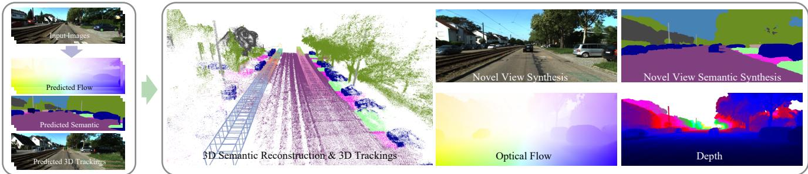
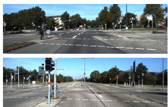

原图注（Figure 2）：Method Overview. We decompose the scene into static regions and N rigidly moving dynamic objects. Each dynamic object is represented using 3D Gaussians in its canonical space and then transformed to the world coordinates based on transformations constrained by a unicycle model. We use N unicycle models of different parameters to individually represent the motion of N dynamic objects. Eac…
（中译：方法总览。我们把场景分解为静态区域与 N 个刚体运动中的动态物体。每个动态物体在其规范空间里用 3D 高斯表示，然后基于受 unicycle（单车）模型约束的变换被搬到世界坐标系。我们用 N 个参数各不相同的单车模型来分别表示 N 个动态物体的运动。每……） 怎么看这张图：这张图就是「一块背景 + N 个刚体」这个结构的展开图。① 请先在图里分清两类东西：被打包成「静态」的那部分，和各自独立打包的 N 个动态物体；② 再看每一组动态物体内部——它的高斯是在「规范空间」里定义的，也就是「这个物体不动时的样子」，这是一份与时间无关的形状；③ 最后看把规范空间接到世界坐标的那一环，那里就是 unicycle 约束生效的地方：形状是固定的，时间上变化的只是那组变换。 一处诚实提醒：原文图注在 OCR 里被截断（结尾的「Eac…」没了下文），我保留了省略号，没有替它补写内容。 要记住的一句话：这个结构的价值在于把「形状」与「运动」彻底分开了——形状优化一次，运动交给少数几个物理参数，所以它既稳定、又能被解释。
再说它怎么变成「理解」的：语义。原文 Fig. 3 讲了一个很值得记的细节——语义 logits（类别分数）要在三维空间里做归一化，而不是把各个二维视角的分数累积起来再 softmax。原文说，在 3D 空间里归一化能明显减少漂浮物（floaters），得到更好的三维语义重建。这个道理其实很直白：你在二维图上分别算分数再平均，光照、遮挡、视角都会带偏差进来；直接在三维空间里比，才是「这个位置到底是什么」的正确问法。

原图注（Figure 1）：Illustration. Given posed RGB images as input, our method lifts noisy 2D & 3D predictions to the 3D space via decomposed 3D Gaussians, and enables holistic scene understanding in 2D and 3D space.
（中译：示意。给定带位姿的 RGB 图像作为输入，我们的方法通过分解的高斯把嘈杂的二维与三维预测抬升到三维空间，从而在二维与三维空间中实现整体性的场景理解。） 怎么看这张图：这张图的两个关键词是「decomposed（分解的）」和「posed（带位姿的）」。① 输入是带位姿的 RGB 图像——也就是说，位姿是别人给的，它自己不算位姿（这一点下一节专门讲）；② 「分解的高斯」指的是上一段说的动静分解；③ 所谓「把嘈杂的 2D 与 3D 预测抬到 3D」，意思是：单独的二维检测（框、掩码）和三维检测都是有噪声的、互相不一致的，把它们统一放到一个三维高斯场里去联合优化，噪声会互相抵消。 要记住的一句话：这一篇的立场是「用一个统一的三维表示，去消解各个模块各自为政带来的不一致」。
城市级。实验跑在 KITTI、KITTI-360、vKITTI2 上，对比的是 MARS 与 PNF。KITTI-360 本身就是城市规模的驾驶数据集。
原文承认的短板
① 它依赖三维框的预测质量——KITTI 上用的是单目三维框，vKITTI 上甚至用的是手动抖过的框；② unicycle 模型只适配特定类型的刚体运动（见下一节）。
第 ① 条要展开说一句，因为它是这一篇最实在的边界：你要把场景拆成「背景 + N 个刚体」，前提是你得先知道「有哪几个刚体、它们大概在哪」。这个信息 HUGS 是从外部检测器拿的。所以如果检测器漏了一辆车，这辆车就不会被当成动态物体，会被当成背景「焊死」在场景里——它一走动，背景就被污染了。原文也承认「嘈杂的框」是它的输入之一，并专门做了「用带噪框」的对比实验（Fig. 9）。

原图注（Figure 7）：Scene Decomposition on KITTI. Our approach enables clear decomposition of foreground and background.
（中译：KITTI 上的场景分解。我们的方法能做到前景与背景的清晰分解。） 怎么看这张图：这张图就是上一张自绘图在真实数据上的样子。① 请重点看「前景」那一部分——动态物体被单独抽出来之后，它自己应该是一个干净、完整、没有拖影的东西；② 再看「背景」——原本被车和人挡住的那些区域，现在应该露出了干净的路面，而不是残留着一团糊掉的痕迹；③ 如果背景里还能看见「车形的鬼影」，那就说明分解没做干净，那辆车被当成背景焊进去了。 要记住的一句话：动静分解好不好，看背景里有没有鬼影就够了——这正是第一季 0012 课与第三季 0068 课反复强调的「幽灵几何」问题。
所以整体的优化是这样的：背景高斯 + N 组规范空间里的动态高斯 + N 组单车模型参数 + 语义，全部放在一起联合优化。原文 §3 的原话大意就是「每个动态物体在自己的规范空间用高斯表示，然后根据受单车模型约束的变换搬到世界坐标系；我们用 N 个不同参数的单车模型来分别表示 N 个动态物体的运动」。
原图注（Fig. 1）：Illustration of the gap between actual 3D movement, ideal optical flow, and 2D flow rendered via α-blending. Due to a nearly static Gray Gaussian in front (closer to the imaging plane), the 2D flow produced by the renderer is perturbed and squeezed due to the effect of weighted-average along the ray. If we directly align it with optical flow, inaccurate motion (or even reversed direction u…
（中译：三维真实运动、理想光流、以及通过 α 混合渲染出来的二维光流之间的差距示意。由于前面（更靠近成像平面处）有一个近乎静止的灰色高斯，渲染器产生的二维光流因为沿光线的加权平均效应而被扰动、被挤压。如果我们直接把它与光流对齐，就会得到不准确、甚至方向相反的运动……） 怎么看这张图：这张图是这一篇的立论基础，请一定看明白。① 图中那个灰色的大高斯是「挡在前面、几乎不动」的东西；② 它后面那个真正在运动的物体才是你想估的；③ 关键结论是：渲染器算出来的那条流，是两者沿光线加权平均的结果，所以它既不等于真实的运动，也不等于理想的流——它被「挤压」了，甚至可能反向。 要记住的一句话：所以这一篇的贡献不是「用光流做监督」（这个想法很旧），而是「先把光流这个监督信号本身修对，再拿它去监督」。
原图注（Fig. 9）：Visualization of tracking with 3D Gaussians. Lines in the figures stand for the trajectory of foreground 3D Gaussians on PanopticSports [11]. The 2D tracking errors (represented with max flow errors) are also reported.
（中译：用 3D 高斯做跟踪的可视化。图中的线代表 PanopticSports 上前景 3D 高斯的轨迹。二维跟踪误差（用最大光流误差表示）也一并给出。） 怎么看这张图：这张图是「时间维」这件事最直观的样子。① 图里那些线就是一个个前景高斯在时间里走过的路径；② 注意它们是一条条分开的线，不是一整团——说明每个高斯各自带着自己的运动轨迹，这正是「运动进了模型」的样子；③ 图注还报告了二维跟踪误差，作为量化的佐证。 要记住的一句话：一旦每个高斯都带上了轨迹，重建和跟踪就变成了同一件事——这正是本节最后那条线索要讲的变化。
5. ★ 一个必须查清的问题：它估位姿吗
这个问题在 SLAM 语境下格外重要，因为「估位姿」与否直接决定了一篇论文是里程计侧（前端）还是建图侧（后端 / 感知）。两篇的答案都是：不估，位姿是外部给的。
问题
HUGS
Motion-Aware
它估相机位姿吗
不估——输入就是「带位姿的 RGB 图像」（posed RGB images）
不估——原文明确把相机位姿当作已知 / 已提供的量
属于哪一侧
建图 + 感知侧（不是里程计前端）
建图侧（mapping，动态场景重建）
那它在解决什么
给定位姿之后，场景是什么、谁在动、动得对不对、能不能编辑
给定位姿之后，动态场景怎么重建得又准又省
这件事为什么值得单独立一节？因为它决定了你能不能说「这一篇是 SLAM」。
诚实定位
HUGS 与 Motion-Aware 都不是完整的 SLAM 系统。它们不估相机位姿、不做回环、不维护长期一致的地图——它们默认「你已经知道每一帧相机在哪」。这在离线重建、数据集评测的场景下是合理的前提（KITTI 那类数据集本来就提供了位姿），但放到一台真的要在未知环境里跑起来的机器上，前面还得有一整套里程计把它喂饱。
所以准确的说法是：它们属于 SLAM 的「建图与感知」这一段，和第五季 0102 FusionPortable 那类评测平台、第四季 0075 LeGO-LOAM 的机载场景理解是同一类角色——只是换了表示、也加上了动态。
顺带说一句：这也解释了为什么本季前面几课（0117 MonoGS、0118 SplaTAM、0119 Photo-SLAM、0121 WildGS-SLAM）那么强调「以高斯为唯一表示的 SLAM」——那些是在把位姿估计也做进高斯里的，而这一节的两篇不做。把它们放在一起读，正好能看清「高斯当表示」和「高斯当 SLAM 的全部」之间的差别。
互动判断
小刚读完 HUGS 之后说：「它能重建城市、能分语义、能估运动、还能编辑场景，这就是一个城市级 SLAM 系统。」这个说法对吗？
Motion-Aware 的贡献更「方法论」一些。它提出的不是一个更强的形变模型，而是一句提醒：你打算拿来当监督的那个量，自己可能是错的。「渲染出来的光流被前面那个静止高斯挤压了」这个观察很具体、很值得记，因为这类「监督信号本身有系统偏差」的坑，在整个 SLAM 里到处都是（残差怎么建、观测怎么加权、外参对不对……）。它的代价是依赖光流质量，而光流本身在遮挡、大位移、弱纹理处也不可靠。
两篇的边界也一样清楚：都不估位姿。所以它们都不是完整的 SLAM 系统，而是 SLAM 的「建图与感知」那一段。要把它们变成一台能自己跑起来的机器，前面还得接一整套里程计。